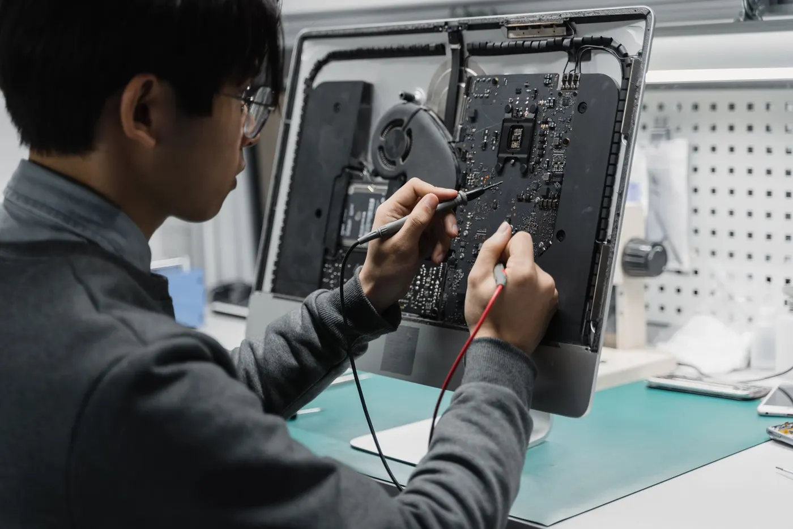

Assistência técnica em BH
Manutenção de computador em Belo Horizonte.
Diagnóstico de hardware, troca de componentes, montagem, otimização e manutenção para computadores pessoais e profissionais.
Pedir orçamento para computadorDiagnóstico antes da troca
Performance com uma solução adequada ao seu uso.
Analisamos o problema e o objetivo do equipamento antes de indicar componentes ou alterações. Assim, você investe no que realmente pode melhorar a máquina.
- Diagnóstico de falhas de hardware
- Troca e instalação de componentes
- Montagem e configuração
- Otimização de desempenho
- Limpeza e manutenção preventiva
Seu computador precisa de manutenção?
Descreva o defeito e informe como você utiliza a máquina.
Solicitar avaliação